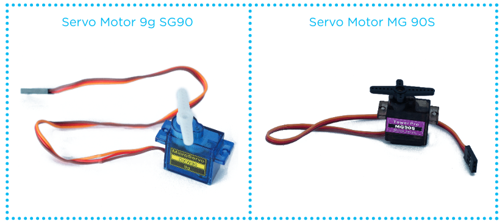

Robótica
Servo Motor
Os Servos Motores são dispositivos que possuem movimento
rotativo proporcional a um comando para atingir a posição desejada
com velocidade monitorada.
Lista de Materiais
- 01 Placa Arduino Uno R3;
- 01 Servo Motor MG 90S;
- 03 Jumpers Macho-Macho;
- 01 Notebook;
- 01 Cabo USB;
- Software Arduino IDE.

Os Servos Motores são acionados através de três
fios: marrom (GND), vermelho (5V) e laranja (sinal)
Montagem
Programação
#include <Servo.h>
Servo meuservo;
int Pino_Servo = 7;
void setup() {
meuservo.attach(Pino_Servo);
}
void loop() {
meuservo.write(0);
delay(1000);
meuservo.write(90);
delay(1000);
meuservo.write(180);
delay(1000);
}